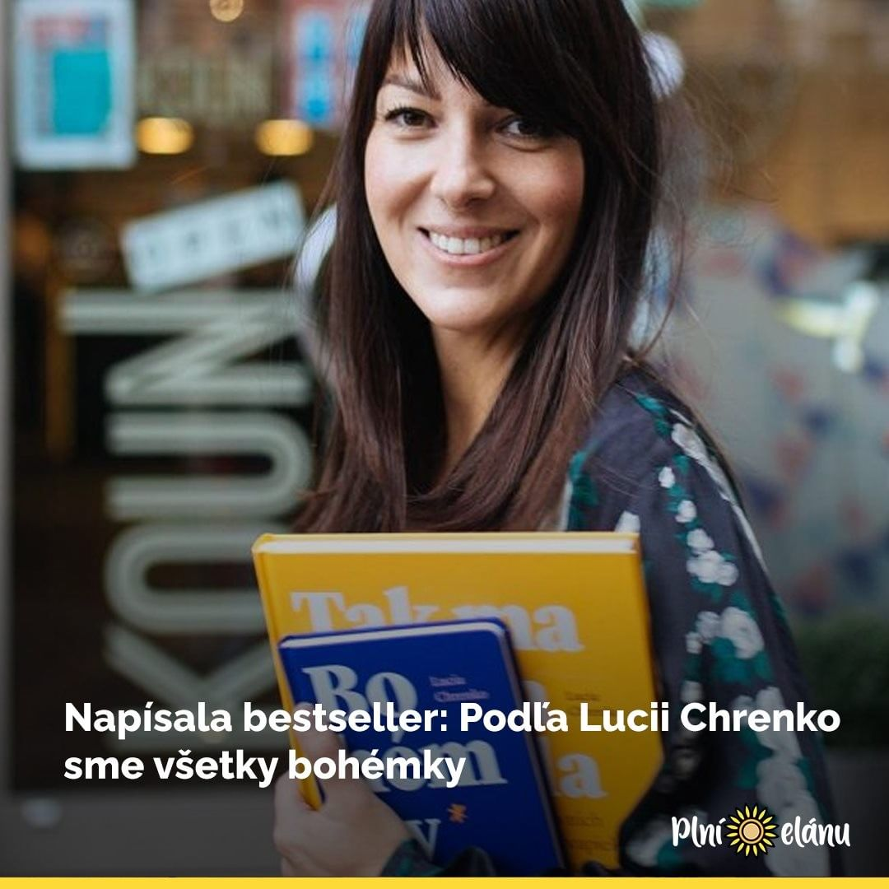

Keď Lucia dostala nápad na napísanie netradičnej kuchárskej knihy, ktorá by nebola len o varení, ale aj o úcte k tradíciám a zachovávaní rodinných rituálov, vo všetkých vydavateľstvách sa stretla s krútením hlavy. Nevzdala sa však a knihu Tak ma mama naučila nakoniec vydala v samonáklade. Vypredala sa, ako horúce rožky!
Vyštudovaná prekladateľka a tlmočníčka z francúzskeho a talianskeho jazyka však nosila vo svojom srdci sen o ďalšej vizuálne pôsobivej knižke. Bohémky, ktoré vyšli uplynulý rok, sú estetický skvost, v ktorom cez podmanivé fotografie, mikroeseje a recepty necháva nahliadnuť nielen do svojej kuchyne. Ale aj do šperkovnice, zážitkov z noblesného Paríža, rodinných spomienok, randenia, historických kuriozít a ďalších svojich lások. Všetko so šarmom, ktorý sa na ňu nalepil ešte v Paríži. Viac prezradila v rozhovore....nájdete ho na našom webe a čoskoro aj v linku v BIO. 😊 @luciachrenko #luciachrenko #bohemky #plnielanusk #clanok #slovensko #slovakia